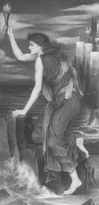

"Bu aşk öyküsü, binyıllardan beri birçok sanatçıya konu ve esin kaynağı oldu. Homeros'tan önce yaşayan ve bu konuyu ilk ele alan ozan, Musayos'tu. Ondan yüzyıllar sonra Vergilius, Ovidius, Schiller ve Byron gibi ozanlar da aynı konuyu işlediler. Hatta İngiliz ozan Byron; bu aşkın yaşandığı Narburnu'na geldi ve bu dar boğazı, Leandros örneği yüzerekten geçti..."
Çağlar boyu dillerden düşmeyen bu öyküyle İstanbul'daki Kızkulesi'ni ilişkilendiren yazarlar varsa da gerçekte söz konusu serüvenler, Çanakkale Boğazı'nda yaşandı...
Boğaz'ın en dar yeri olan Anadolu yakasındaki Narburnu'nda, eskiden Abidos denen bir kent vardı. Tam karşıdaki Avrupa yakasında da Sestos adlı bir kent... Bu güzel kentteki tanrıça Afrodit'in tapınağını, Boğaz'ın beyaz güvercinleri yurt edinmişlerdi. Tapınağın rahibesi güzeller güzeli Hero da, bu güvercinlerin bakımıyla ilgileniyordu...
Her yıl Sestos'ta, güzellik tanrıçası Afrodit'in çok genç yaşta ölen Adonis adlı sevgilisinin anısına şölenler düzenlenirdi. Bu şölen günleri geldiğinde bütün genç kızlar; ilkbaharın cömertçe sunduğu en kokulu çiçek ve dallardan ördükleri çelenkleri, taçları boyunlarına, başlarına takarlar; rengârenk giysilerle dolaşırlardı kentin içinde... Bu arada gözlerine kestirdikleri delikanlılarla tanışırlar; çoğu zaman bu ilişkiyi yaşam boyu sürdürürlerdi... Boğaz'ın karşı yakasındaki Abidos kentinde yaşayan Leandros adlı bir prens de, bu bahar şenliklerine katılmak için bir gün Sestos kentine geldi. Başına defne dalından bir çelenk takmış, yanına da tanrıça Afrodit'e sunmak üzere bir güvercin kafesi almıştı armağan olarak. Kente gelir gelmez girdiği Afrodit tapınağının avlusunda, beyaz ve pembe giysiler içindeki güzel rahibe Hero ile karşılaştı. Hero'nun hem kendisinden, hem de üstündeki giysilerin çarpıcı renklerinden bir anda büyülenir gibi oldu Leandros... Çok geçmeden de birbirleriyle tanıştılar. Tanrıça Afrodit; bu iki gencin duygularını, saldığı aşk oklarıyla kısa sürede bir karasevdaya dönüştürüverdi!..

Halkyone
Ne var ki iki sevgilinin birleşmelerini önleyen bir engel vardı arada: Bir söylentiye göre kızın ailesi hem çok varlıklı, hem de çok bıçkın cinstenmiş ve kızları Hero'nun evlenmesini istemiyorlarmış. O yüzden de onu Afrodit'in tapınağına rahibe olarak kapatmışlar... Böyle bir engele karşın birbirlerine deli divane vurulan bu iki genç, bir buluşma yöntemi üzerinde anlaştılar. Buluşmak istediklerinde rahibe Hero boğazın suları karanlıklara gömüldüğünde, elindeki ışıklı meşaleyi tapınağın kulesinden karşı sahile doğru sallayacaktı... Leandros da bu ışığı gördüğünde Boğaz'ı yüzerekten geçecek ve tapınakta buluşacaklardı...
Zaten ayrıldıklarının daha ertesi günü Leandros, karşı sahilden kendisine "gel" diyecek bir meşale ışığını beklemeye başladı. Gerçekten de ertesi akşam bir ışık topunun deniz ufkunda kıpırdadığını görür gibi oldu... Hemen kendini apar topar Boğaz'ın sularına vurdu... Kulaç kulaç karşı sahile doğru yol alırken, bir yarımay da ona kılavuzluk ediyordu. Karşı sahildeki ışık topu gitgide daha da büyüyüp belirginleşiyordu. Bir süre sonra meşaleyi sallayan ve aşkla yanan Hero da, kendisine doğru yaklaşan sevgilisini gitgide daha açık seçik görmeye başladı... Çok geçmeden de, iki sessiz çığlık gibi Afrodit'in tapınağında buluştular...
Birlikte geçirdikleri ilk gecenin nasıl oncasına çarçabuk geçiverdiğini bile anlayamayan iki âşık; güneşin atları daha günlük koşularına başlamadan zorlukla ayrıldılar birbirlerinden...
Bu buluşmalar bütün bahar ve yaz boyunca, gittikçe daha da yalazlanan bir tutkuyla sürüp gitti. Artık sonbahar gelip çattı... Derken kış da başladı... Sert rüzgârlar Boğaz'ın sularını yalamaya, giderek dövmeye başladı. Bir süre sonra da, insan kulaçlarının alt edemeyeceği acımasız dalgalar savrulmaya başladı sularda... Leandros'un zorlukla Boğaz'ı kulaçlayıp geldiği bir akşam Hero poyrazların dinmesini beklemenin ve bu kaçak buluşmalara bir süre ara vermenin iyi olacağın söyledi. "Seni yitirmek istemiyorum!" dedi Hero... Leandros da sevgilisine hak verdi.
Ne var ki Leandros her akşam gene de sahile gidiyor, karşı yakaları gözetliyordu bir süre. Sahile her gelişinde de, sert rüzgârların estiği denizin ötelerinden bir sarkaç gibi sallanacak ve kendisine "denize açıl!" işaretini verecek Hero'nun ışık topunu bekliyor gibiydi. Hero da gene her akşam, elinde daha ateşlenmemiş meşalesiyle tapınağın kulesine çıkıyor, Leandros'un Boğaz'ı geçip kendisine gelmesini istiyor gibiydi... Ve saatler sonra yardımcısı yaşlı kadının uyarısıyla, tapınaktaki soğuk odasına dönüyordu. Ama bir akşam gene kuleye çıktığında, içini öylesine bir hasret kasırgası sardı ki, elinde olmadan, bilinçsizce meşalesini ateşledi aniden ve onu Boğaz'ın kırçıl sularına karşı sallamaya başladı...
Gene her akşamki gibi Boğaz'ın karşı yakasından tapınağı gözetleyen Leandros, Hero'nun meşale ışığını seçer seçmez, kendini apar topar sulara attı... Denizi acı acı döven rüzgârları duymuyordu bile! Ama bir süre ilerledikten sonra, gittikçe kuduran dalgalar arasında gücünü yitirmeye başladı...
Karşı yakadaki güzel rahibe Hero, bütün gece sevgilisi Leandros'u bekledi. Sonra da böyle bir havada onun zaten yola çıkamayacağını düşünerekten kendini avutmaya çalıştı...
Gül parmaklı şafak tanrıçası Eos; Boğaz'ın sularını ve gökyüzünü maviye ve pembeye boyadığı sıralarda sahile inen güzel ve uykusuz Hero; kumların üstünde, sevgilisi Leandros'un yer yer morarmış ve karaya kesilmiş bedeniyle karşılaştı!..
Ne yapacağını şaşıran Hero, bir an kilitlenmiş gibi oldu... Sonra da koşar adımlarla tapınağa döndü ve canhıraş kuleye tırmanmaya başladı. Kulenin sonuna ulaşır ulaşmaz da, sevgilisinin yattığı sahile doğru bakan boşluğa kendini bırakıverdi...